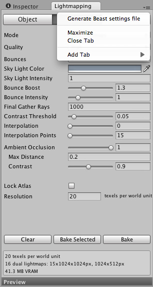

<!-- #BeginTemplate "/Templates/manual-page.dwt" --><!DOCTYPE html PUBLIC "-//W3C//DTD XHTML 1.0 Transitional//EN" "http://www.w3.org/TR/xhtml1/DTD/xhtml1-transitional.dtd">


<html xmlns="http://www.w3.org/1999/xhtml">


<head>


<meta charset="utf-8">


	<!-- #TemplateBeginEditable name="doctitle" -->


		<title>Unity - Custom Beast Settings</title>


	<!-- #TemplateEndEditable -->


</head>


<link rel="StyleSheet"  href="../Images/docs.css" type="text/css" />


<body onLoad="DocLoaded();">


<table class="titlebar" cellpadding=0 cellspacing=0 border=0><tr>


	<td class="titleleft"></td>


	<td><a href="../../Documentation.html"></a></td>


	<td class="titlemid">


		<table><tr>


			<td class="doctitle">Custom Beast Settings</td>


			<td><table align="right"><tr>


			<!-- #TemplateBeginEditable name="sections-nav" -->


			<td class="Manual"><a href="../Manual/index.html" title="Go to Unity manual" class="scripting-anchor"><span class="manual-text">Manual</span></a><span class="docs-navigation">&nbsp;&nbsp;&nbsp;&nbsp;</span></td>


			<td class="Manual"><a href="../Components/index.html" title="Go to Reference" class="scripting-anchor"><span class="components-text">Reference</span></a><span class="docs-navigation">&nbsp;&nbsp;&nbsp;&nbsp;</span></td>


			<td class="Manual"><a href="../ScriptReference/index.html" title="Go to Scripting Reference" class="scripting-anchor"><span class="scripting-text">Scripting &nbsp;&nbsp;</span></a></td>


			<!-- #TemplateEndEditable -->	


			</tr></table></td>


		</tr><tr>


			<td colspan="4">


				<table width="100%" class="docpath"><tr><td >


		<!-- #TemplateBeginEditable name="path" -->


					<a href="../Manual/index.html">Unity Manual</a> &gt; <a href="../Manual/Advanced.html">Advanced</a> &gt; <a href="../Manual/Lightmapping.html">Lightmapping Quickstart</a> &gt; <a href="../Manual/LightmappingCustomSettings.html">Custom Beast Settings</a>


		<!-- #TemplateEndEditable -->	


				</td>


				</td><td class="switchlink">


					<!-- #TemplateBeginEditable name="switchLink" -->


					<!--BeginSwitchLink--><!--EndSwitchLink-->


					<!-- #TemplateEndEditable -->	


				</td></tr></table>


			</td>


		</tr></table>


	</td>


	<td class="titleright" width="9"></td>


</tr></table>


<div class="manual">


	<div class="main">


<!-- #TemplateBeginEditable name="unofficial translation" -->
<div id="unofficial_translation"><center><table border="1" ><tr><td  bgcolor="yellow"><center>このドキュメントは有志により翻訳されたもので、オフィシャルではありません。オリジナルのページは<a href="http://unity3d.com/support/documentation/" target="_blank">こちら</a>。<br>This document is unofficially translated by users.Please see the original document <a href="http://unity3d.com/support/documentation/" target="_blank">here</a>.<br><br>翻訳に関する修正など、ご連絡は<a href="mailto:stagesp1@gmail.com">こちら</a>まで。<br>Please send e-mail to <a href="mailto:stagesp1@gmail.com">here</a>, when you have any question about the translation.</center></td>
<!--<td><a href="toedit_proxy.php?url=<replace_here_with_url>"></a><br/>編集</td>-->
</tr></table></center></div>
<!-- #TemplateEndEditable -->

<!-- #TemplateEndEditable -->


<!-- #TemplateEndEditable -->


<!-- #TemplateEndEditable -->


		<!-- #TemplateBeginEditable name="navigation" -->


		<div class="nav">


		<div class="nav-prev">


			<a href='../Manual/LightmappingInDepth.html'>


				<div class="nav-left"></div>


				<div class="nav-main">Previous</div>


				<div class="nav-right"></div>


			</a>


		</div>


	


		<div class="nav-next">


			<a href='../Manual/LightmappingUV.html'>


				<div class="nav-left"></div>


				<div class="nav-main">Next</div>


				<div class="nav-right"></div>


			</a>


		</div>


	</div>


		<!-- #TemplateEndEditable -->	


		<!-- #TemplateBeginEditable name="title" -->


			<h1>Custom Beast Settings</h1>


		<!-- #TemplateEndEditable -->	


		<!-- #TemplateBeginEditable name="body" -->


			


<p>If you need a different baking setup than the one Unity is using by default, you can specify it by using custom Beast settings.


</p>


<p class='vspace'>Beast reads bake settings defined in xml format. Normally Unity generates the xml file based on the configuration you have chosen in Bake pane of the Lightmap Editor window and a number of other internal settings. You can override those settings by specifying your own settings in Beast's xml format.


</p>


<p class='vspace'>To have Unity automatically generate the xml file for you, click the tab menu in the upper-right corner of the Lightmap Editor window and select <em>Generate Beast settings file</em>. You will notice that the BeastSettings.xml file appeared in the project next to your lightmaps and that the Lightmap Editor informs you, that your xml settings will override Unity's settings during the next bake. Click the <em>open</em> button to edit your custom settings.


</p>


<div class='vspace'></div><div> </div>


<div class='vspace'></div><h2>Adaptive Sampling</h2>


<p>Beast uses an adaptive sampling scheme when sampling light maps. The light must differ more than a user set contrast threshold for Beast to place additional samples in an area. The sample area is defined by a Min and Max sample rate. The user sets the rate in the -4..4 range which means that Beast samples from 1/256 sample per pixel to 256 samples per pixel (the formula is 4�samplerate). It is recommended to use at least one sample per pixel for production use (Min sample rate = 0). Undersampling is most useful when doing camera renders or baking textures with big UV-patches. When Beast has taken all necessary samples for an area, the final pixel value is weighed together using a filter. The look the filter produces is dependent on the filter type used and the size of the filter kernel. The available filters are:


</p>


<div class='vspace'></div><ul><li>Box: Each sample is treated as equally important. The fastest filter to execute but it gives blurry results.


</li><li>Triangle: The filter kernel is a tent which means that distant samples are consideredless important.


</li><li>Gauss: Uses the Gauss function as filter kernel. This gives the best results (removes noise, preserves details).


</li></ul><p class='vspace'>There are more filters available, but these three are the most useful. The kernel (filter) size is given in pixels in the range 1..3. Beast actually uses all sub pixels when filtering, which yields better results than doing it afterwards in Photoshop.


</p>


<div class='vspace'></div><table width='100%'><tr class='tableheader'><td  class='prop'></td><td class='function'></td></tr>


<tr ><td  colspan='2'><span class='doc-prop'>AASettings</span></td></tr>


<tr ><td ><span  style='padding-left: 1.5em;'><span class='doc-prop'>samplingMode</span></span></td><td >The sampling strategy to use. Default is Adaptive. Adaptive: Adaptive anti-aliasing scheme for under/over sampling (from 1/256 up to 256 samples per pixel). SuperSampling: Anti-aliasing scheme for super sampling (from 1 up to 128 samples per pixel).</td></tr>


<tr ><td ><span  style='padding-left: 1.5em;'><span class='doc-prop'>minSampleRate</span></span></td><td >Sets the min sample rate, default is 0 (ie one sample per pixel).</td></tr>


<tr ><td ><span  style='padding-left: 1.5em;'><span class='doc-prop'>maxSampleRate</span></span></td><td >Sets the max sample rate, the formula used is 4^maxSampleRate (1, 4, 16, 64, 256 samples per pixel)</td></tr>


<tr ><td ><span  style='padding-left: 1.5em;'><span class='doc-prop'>contrast</span></span></td><td >The contrast value which controls if more samples are necessary - a lower value forces more samples.</td></tr>


<tr ><td ><span  style='padding-left: 1.5em;'><span class='doc-prop'>filter</span></span></td><td >Sets which filter type to use. Most useful ones for Baking are Box, Triangle and Gauss.</td></tr>


<tr ><td ><span  style='padding-left: 1.5em;'><span class='doc-prop'>filterSize</span></span></td><td >Sets the filter size in pixels, from 1 to 3.</td></tr>


</table>


<div class='vspace'></div><h2>Texture Bake</h2>


<p>These settings help getting rid of any artifacts that are purely related to how lightmaps are rasterized and read from a texture.


</p>


<div class='vspace'></div><table width='100%'><tr class='tableheader'><td  class='prop'></td><td class='function'></td></tr>


<tr ><td  colspan='2'><span class='doc-prop'>TextureBakeSettings</span></td></tr>


<tr ><td ><span  style='padding-left: 1.5em;'><span class='doc-prop'>edgeDilation</span></span></td><td >Expands the rendered region with the number of pixels specified. This is needed to prevent the artifacts occurring when GPU filters in empty pixels from around the rendered region.</td></tr>


<tr ><td ><span  style='padding-left: 1.5em;'><span class='doc-prop'>bilinearFilter</span></span></td><td >Is used to make sure that the data in the lightmap is "correct" when the GPU applies bilinear filtering. This is most noticable when the atlases are tightly packed. If there is only one pixel between two different UV patches, the bilinear functionality in Beast will make sure the that pixel is filled with the color from the correct patch. This minimizes light seams.</td></tr>


<tr ><td ><span  style='padding-left: 1.5em;'><span class='doc-prop'>conservativeRasterization</span></span></td><td >Is used when the UV-chart does not cover the entire pixel. If such a layout is used, Beast may miss the texel by mistake. If conservative rasterization is used Beast will guarantee that it will find a UV-layout if present. Note that Beast will pick any UV-layout in the pixel. Conservative Rasterization often needs to be turned on if the UV atlases are tightly packed in low resolutions or if there are very thin objects present.</td></tr>


<tr ><td ><span  style='padding-left: 1.5em;'><span class='doc-prop'>bgColor</span></span></td><td >The background color of the lightmap.</td></tr>


</table>


<div class='vspace'></div><h2>Environment</h2>


<p>The environment settings in Beast control what happens if a ray misses all geometry in the scene. The environment can either be a constant color or an HDR image in lat-long format for Image Based Lighting (IBL). Note that environments should only be used for effects that can be considered to be infinitely far away, meaning that only the directional component matters.


</p>


<p class='vspace'>Defining an environment is usually a very good way to get very pleasing outdoor illumination results, but might also increase bake times.


</p>


<div class='vspace'></div><table width='100%'><tr class='tableheader'><td  class='prop'></td><td class='function'></td></tr>


<tr ><td  colspan='2'><span class='doc-prop'>EnvironmentSettings</span></td></tr>


<tr ><td ><span  style='padding-left: 1.5em;'><span class='doc-prop'>giEnvironment</span></span></td><td >The type of Environment: None, Skylight or IBL.</td></tr>


<tr ><td ><span  style='padding-left: 1.5em;'><span class='doc-prop'>giEnvironmentIntensity</span></span></td><td >A scale factor for the intensity, used for avoiding gamma correction errors and to scale HDR textures to something that fits your scene. (in Unity: <em>Sky Light Intensity</em>)</td></tr>


<tr ><td ><span  style='padding-left: 1.5em;'><span class='doc-prop'>skyLightColor</span></span></td><td >A constant environment color. Used if type is Skylight. It is often a good idea to keep the color below 1.0 in intensity to avoid boosting by gamma correction. Boost the intensity instead with the giEnvironmentIntensity setting. (in Unity: <em>Sky Light Color</em>)</td></tr>


<tr ><td ><span  style='padding-left: 1.5em;'><span class='doc-prop'>iblImageFile</span></span></td><td >High-dynamic range IBL background image in Long-Lat format, .HDR or .EXR, absolute path.</td></tr>


</table>


<div class='vspace'></div><h2>Shadows</h2>


<p>Settings for ray-traced shadows.


</p>


<div class='vspace'></div><table width='100%'><tr class='tableheader'><td  class='prop'></td><td class='function'></td></tr>


<tr ><td  colspan='2'><span class='doc-prop'>RenderSettings</span></td></tr>


<tr ><td ><span  style='padding-left: 1.5em;'><span class='doc-prop'>bias</span></span></td><td >An error threshold to avoid double intersections of shadow rays. For example, a shadow ray should not intersect the same triangle as the primary ray did, but because of limited numerical precision this can happen. The bias value moves the intersection point to eliminate this problem. If set to zero this value is computed automatically depending on the scene size.</td></tr>


<tr ><td ><span  style='padding-left: 1.5em;'><span class='doc-prop'>maxShadowRays</span></span></td><td >The maximum number of shadow rays per point that will be used to generate a soft shadow for any light source. Use this to shorten render times at the price of soft shadow quality. This will lower the maximum number of rays sent for any light sources that have a shadowSamples setting higher than this value, but will not raise the number if shadowSamples is set to a lower value.</td></tr>


</table>


<div class='vspace'></div><h2>Global Illumination</h2>


<p>The Global Illumination system allows you to use two separate algorithms to calculate indirect lighting. You can for instance calculate multiple levels of light bounces with a fast algorithm like the Path Tracer, and still calculate the final bounce with Final Gather to get a fast high-quality global illumination render. Both subsystems have individual control of Intensity and Saturation to boost the effects if necessary.


</p>


<p class='vspace'>It's recommended to use FinalGather as the primary integrator and either None or PathTracer as the secondary integrator. Unity uses the first option (so final gather only) as the default, since it produces the best quality renders in most cases. Path Tracer should be used if many indirect bounces are needed and Final Gather-only solution with acceptable quality would take to much time to render.


</p>


<div class='vspace'></div><table width='100%'><tr class='tableheader'><td  class='prop'></td><td class='function'></td></tr>


<tr ><td  colspan='2'><span class='doc-prop'>GISettings</span></td></tr>


<tr ><td ><span  style='padding-left: 1.5em;'><span class='doc-prop'>enableGI</span></span></td><td >Setting to true enables Global Illumination.</td></tr>


<tr ><td ><span  style='padding-left: 1.5em;'><span class='doc-prop'>primaryIntegrator</span></span></td><td >The integrator used for the final calculations of indirect light. FinalGather is default.</td></tr>


<tr ><td ><span  style='padding-left: 1.5em;'><span class='doc-prop'>secondaryIntegrator</span></span></td><td >The integrator used for initial bounces of indirect light. Default is None, PathTracer is optional.</td></tr>


<tr ><td ><span  style='padding-left: 1.5em;'><span class='doc-prop'>primaryIntensity</span></span></td><td >As a post process, converts the color of the primary integrator result from RGB to HSV and scales the V value. (in Unity: <em>Bounce Intensity</em>)</td></tr>


<tr ><td ><span  style='padding-left: 1.5em;'><span class='doc-prop'>primarySaturation</span></span></td><td >As a post process, converts the color of the primary integrator result from RGB to HSV and scales the V value.</td></tr>


<tr ><td ><span  style='padding-left: 1.5em;'><span class='doc-prop'>secondaryIntensity</span></span></td><td >As a post process, converts the color of the secondary integrator result from RGB to HSV and scales the S value.</td></tr>


<tr ><td ><span  style='padding-left: 1.5em;'><span class='doc-prop'>secondarySaturation</span></span></td><td >As a post process, converts the color of the secondary integrator result from RGB to HSV and scales the S value.</td></tr>


<tr ><td ><span  style='padding-left: 1.5em;'><span class='doc-prop'>diffuseBoost</span></span></td><td >This setting can be used to exaggerate light bouncing in dark scenes. Setting it to a value larger than 1 will push the diffuse color of materials towards 1 for GI computations. The typical use case is scenes authored with dark materials, this happens easily when doing only direct lighting since it�s easy to compensate dark materials with strong light sources. Indirect light will be very subtle in these scenes since the bounced light will fade out quickly. Setting a diffuse boost will compensate for this. Note that values between 0 and 1 will decrease the diffuse setting in a similar way making light bounce less than the materials says, values below 0 is invalid. The actual computation taking place is a per component pow(colorComponent, (1.0 / diffuseBoost)). (in Unity: <em>Bounce Boost</em>)</td></tr>


</table>


<div class='vspace'></div><h2>Final Gather</h2>


<p>The settings below control the quality or correctness of the Final Gather solution. The normal usage scenario is this:


</p>


<div class='vspace'></div><ol><li>For each baking set up Contrast Threshold and Number of Rays may be adjusted. There are no perfect settings for these since they depend on the complexity of the geometry and light setup.


</li><li>Check Visibility and Light Leakage reduction are expensive operations and should only be used to remedy actual light leakage problems. These settings will only help if the light leakage is caused by the Global Illumination calculations. A very common light leakage situation is occurs with a wall as a single plane with no thickness. The light leaking through in that situation does not come from GI.


</li><li>Gradient threshold should only be changed if there are white halos around corners.


</li></ol><p class='vspace'>Steps 2 and 3 should not need much tweaking in most scenes.


</p>


<div class='vspace'></div><table width='100%'><tr class='tableheader'><td  class='prop'></td><td class='function'></td></tr>


<tr ><td  colspan='2'><span class='doc-prop'>GISettings</span></td></tr>


<tr ><td ><span  style='padding-left: 1.5em;'><span class='doc-prop'>fgContrastThreshold</span></span></td><td >Controls how sensitive the final gather should be for contrast differences between the points during precalculation. If the contrast difference is above this threshold for neighbouring points, more points will be created in that area. This tells the algorithmto place points where they are really needed, e.g. at shadow boundaries or in areas where the indirect light changes quickly. Hence this threshold controls the number of points created in the scene adaptively. Note that if a low number of final gather rays are used, the points will have high variance and hence a high contrast difference. In that the case contrast threshold needs to be raised to prevent points from clumping together or using more rays per sample. (in Unity: <em>Contrast Threshold</em>)</td></tr>


<tr ><td ><span  style='padding-left: 1.5em;'><span class='doc-prop'>fgRays</span></span></td><td >The maximum number of rays taken in each Final Gather sample. More rays gives better results but take longer to evaluate. (in Unity: <em>Final Gather Rays</em>)</td></tr>


<tr ><td ><span  style='padding-left: 1.5em;'><span class='doc-prop'>fgCheckVisibility</span></span></td><td >Turn this on to reduce light leakage through walls. When points are collected to interpolate between, some of them can be located on the other side of geometry. As a result light will bleed through the geometry. To prevent this Beast can reject points that are not visible.</td></tr>


<tr ><td ><span  style='padding-left: 1.5em;'><span class='doc-prop'>fgCheckVisibilityDepth</span></span></td><td >Controls for how many bounces the visibility checks should be performed. Adjust this only if experiencing light leakage when using multi bounce Final Gather.</td></tr>


<tr ><td ><span  style='padding-left: 1.5em;'><span class='doc-prop'>fgLightLeakReduction</span></span></td><td >This setting can be used to reduce light leakage through walls when using final gather as primary GI and path tracing as secondary GI. Leakage, which can happen when e.g. the path tracer filters in values on the other side of a wall, is reduced by using final gather as a secondary GI fallback when sampling close to walls or corners. When this is enabled a final gather depth of 3 will be used automatically, but the higher depths will only be used close to walls or corners. Note that this is only usable when path tracing is used as secondary GI.</td></tr>


<tr ><td ><span  style='padding-left: 1.5em;'><span class='doc-prop'>fgLightLeakRadius</span></span></td><td >Controls how far away from walls the final gather will be called again, instead of the secondary GI. If 0.0 is used Beast will try to estimate a good value. If this does not eliminate the leakage it can be set to a higher value manually.</td></tr>


<tr ><td ><span  style='padding-left: 1.5em;'><span class='doc-prop'>fgGradientThreshold</span></span></td><td >Controls how the irradiance gradient is used in the interpolation. Each point stores its irradiance gradient which can be used to improve the interpolation. In some situations using the gradient can result in white "halos" and other artifacts. This threshold can be used to reduce those artifacts (set it low or to 0). (in Unity: <em>Interpolation</em>)</td></tr>


<tr ><td ><span  style='padding-left: 1.5em;'><span class='doc-prop'>fgInterpolationPoints</span></span></td><td >Sets the number of final gather points to interpolate between. A higher value will give a smoother result, but can also smooth out details. If light leakage is introduced through walls when this value is increased, checking the sample visibility solves that problem. (in Unity: <em>Interpolation Points</em>)</td></tr>


<tr ><td ><span  style='padding-left: 1.5em;'><span class='doc-prop'>fgNormalThreshold</span></span></td><td >Controls how sensitive the final gather should be for differences in the points normals. A lower value will give more points in areas of high curvature.</td></tr>


<tr ><td ><span  style='padding-left: 1.5em;'><span class='doc-prop'>fgDepth</span></span></td><td >Controls the number of indirect light bounces. A higher value gives a more correct result, but the cost is increased rendering time. For cheaper multi bounce GI, use Path Tracer as the secondary integrator instead of increasing depth. (in Unity: <em>Bounces</em>)</td></tr>


<tr ><td ><span  style='padding-left: 1.5em;'><span class='doc-prop'>fgAttenuationStart</span></span></td><td >The distance where attenuation is started. There is no attenuation before this distance. This can be used to add a falloff effect to the final gather lighting. When fgAttenuationStop is set higher than 0.0 this is enabled.</td></tr>


<tr ><td ><span  style='padding-left: 1.5em;'><span class='doc-prop'>fgAttenuationStop</span></span></td><td >Sets the distance where attenuation is stopped (fades to zero). There is zero intensity beyond this distance. To enable attenuation set this value higher than 0.0. The default value is 0.0.</td></tr>


<tr ><td ><span  style='padding-left: 1.5em;'><span class='doc-prop'>fgFalloffExponent</span></span></td><td >This can be used to adjust the rate by which lighting falls off by distance. A higher exponent gives a faster falloff.</td></tr>


<tr ><td ><span  style='padding-left: 1.5em;'><span class='doc-prop'>fgAOInfluence</span></span></td><td >Blend the Final Gather with Ambient Occlusion. Range between 0..1. 0 means no occlusion, 1 is full occlusion. If Final Gather is used with multiple depths or with Path Tracing as Secondary GI the result can become a bit "flat". A great way to get more contrast into the lighting is to factor in a bit of ambient occlusion into the calculation. This Ambient Occlusion algorithm affects only final gather calculations. The Ambient Occlusion exposed in the Lightmapping window is calculated differently - by a separate, geometry-only pass.</td></tr>


<tr ><td ><span  style='padding-left: 1.5em;'><span class='doc-prop'>fgAOMaxDistance</span></span></td><td >Max distance for the occlusion rays. Beyond this distance a ray is considered to be unoccluded. Can be used to avoid full occlusion for closed scenes such as rooms or to limit the AO contribution to creases.</td></tr>


<tr ><td ><span  style='padding-left: 1.5em;'><span class='doc-prop'>fgAOContrast</span></span></td><td >Can be used to adjust the contrast for ambient occlusion.</td></tr>


<tr ><td ><span  style='padding-left: 1.5em;'><span class='doc-prop'>fgAOScale</span></span></td><td >A scaling of the occlusion values. Can be used to increase or decrease the shadowing effect.</td></tr>


</table>


<div class='vspace'></div><h2>Path Tracer</h2>


<p>Use path tracing to get fast multi bounce global illumination. It should not be used as primary integrator for baking since the results are quite noisy which does not look good in light maps. It can be used as primary integrator to adjust the settings, to make sure the cache spacing and accuracy is good. The intended usage is to have it set as secondary integrator and have single bounce final gather as primary integrator. Accuracy and Point Size can be adjusted to make sure that the cache is sufficiently fine grained.


</p>


<div class='vspace'></div><table width='100%'><tr class='tableheader'><td  class='prop'></td><td class='function'></td></tr>


<tr ><td  colspan='2'><span class='doc-prop'>GISettings</span></td></tr>


<tr ><td ><span  style='padding-left: 1.5em;'><span class='doc-prop'>ptAccuracy</span></span></td><td >Sets the number of paths that are traced for each sample element (pixel, texel or vertex). For preview renderings, a low value like 0.5 to 0.1 can be used. This means that 1/2 to 1/10 of the pixels will generate a path. For production renderings values above 1.0 may be used, if necessary to get good quality.</td></tr>


<tr ><td ><span  style='padding-left: 1.5em;'><span class='doc-prop'>ptPointSize</span></span></td><td >Sets the maximum distance between the points in the path tracer cache. If set to 0 a value will be calculated automatically based on the size of the scene. The automatic value will be printed out during rendering, which is a good starting value if the point size needs to be adjusted.</td></tr>


<tr ><td ><span  style='padding-left: 1.5em;'><span class='doc-prop'>ptCacheDirectLight</span></span></td><td >When this is enabled the path tracer will also cache direct lighting from light sources. This increases performance since fewer direct light calculations are needed. It gives an approximate result, and hence can affect the quality of the lighting. For instance indirect light bounces from specular highlights might be lost.</td></tr>


<tr ><td ><span  style='padding-left: 1.5em;'><span class='doc-prop'>ptCheckVisibility</span></span></td><td >Turn this on to reduce light leakage through walls. When points are collected to interpolate between, some of them can be located on the other side of geometry. As a result light will bleed through the geometry. To prevent this Beast can reject points that are not visible. Note: If using this turn off light leakage reduction for Final Gather.</td></tr>


</table>


<p class='vspace'>For more information on the available Beast settings, please refer to the <a class='urllink' href='http://illuminatelabs.com/products/beast/beast-api' rel='nofollow'>Beast documentation on the Illuminate Labs website</a> (settings related sections in the Beast API Manual).


</p>


</p><small>Page last updated: 2010-09-13</p>


    <script type="text/javascript">


    var allHTMLTags = new Array();


    document.divs = new Array();


    function getElementByClass(theClass) {


	    var allHTMLTags=document.getElementsByTagName("*");


	    for (var i=0; i<allHTMLTags.length; i++) {


		    if (allHTMLTags[i].className==theClass) {


			    return true;


		    }


	    }


	    return false;


    }


    function ShowHideDiv(containerName, className, content){


	var container = document.getElementById(containerName);


	if(container == null)


		return;


	if(content == '') {//In case there are no divs in the page we still can change the icons.


		if(containerName == 'desktopRef') {


			if(container.innerHTML == "") {


				container.innerHTML = "";


				SetCookie(containerName, 'set', 30);


			} else {


				container.innerHTML = "";


				UnSetCookie(containerName);


			}


		}


		if(containerName == 'iosRef') {


			if(container.innerHTML == "") {


				container.innerHTML = "";


				SetCookie(containerName, 'set', 30);


			} else {


				container.innerHTML = "";


				UnSetCookie(containerName);


			}


		}


		if(containerName == 'androidRef') {


			if(container.innerHTML == "") {


				container.innerHTML = "";


				SetCookie(containerName, 'set', 30);


			} else {


				container.innerHTML = "";


				UnSetCookie(containerName);


			}	


		}


	} else {


		if(container.innerHTML == "<h1> " + content + "</h1>") {


		container.innerHTML = "<h1>" + content + "</h1>";


			SetCookie(containerName, 'set', 30);


		} else {


			container.innerHTML = "<h1>" + content + "</h1>";


			UnSetCookie(containerName);


		}


	}


	for(var i = 0; i < document.divs.length; i++) {


		var divClassName = document.divs[i];


		var matched = false;


		if(divClassName.className == className)


			   matched = true;


		if(matched) {


			


			if(divClassName != null) {


				if (divClassName.style.display == 'block') {


					divClassName.style.display = 'none';


					if(content == '') {


						if(className == 'specific-desktop')


							container.innerHTML = "";


						if(className == 'specific-ios')


							container.innerHTML = "";


						if(className == 'specific-android')


							container.innerHTML = "";


					} else {


						container.innerHTML = "<h1> " + content + "</h1>";


					}


					UnSetCookie(containerName);


				} else {


					divClassName.style.display = 'block';


					if(content == '') {


						if(className == 'specific-desktop')


							container.innerHTML = "";


						if(className == 'specific-ios')


							container.innerHTML = "";


						if(className == 'specific-android')


							container.innerHTML = "";


					} else {


						container.innerHTML = "<h1> " + content + "</h1>";


					}


					SetCookie(containerName, 'set', 30);


				}


			}


		}	


        }			   


    }


    function UnSetCookie(cn) {


    	SetCookie(cn,'',30);


    }


    function GetCookie(cName) {


	if (document.cookie.length > 0) {


            cStart = document.cookie.indexOf(cName + "=");


	    if(cStart != -1) {


	        cStart = cStart + cName.length + 1;


	        cEnd = document.cookie.indexOf(";", cStart);


	        if (cEnd == -1) {


	            cEnd = document.cookie.length;


	        }


	        return unescape(document.cookie.substring(cStart, cEnd));;


	    }


	}


	return "";


    }


    function SetCookie(cName, value, expireDays) {


	var exDate = new Date();


	exDate.setDate(exDate.getDate()+expireDays);


	document.cookie = cName + "=" + escape(value) + ((expireDays ==null) ? "" : ";expires=" + exDate.toGMTString()) + ";path=/";


    }


    function DocLoaded() {


	document.divs = document.getElementsByTagName('div');


	var prefDesktop = GetCookie('desktopRef');


	var prefiOS = GetCookie('iosRef');


	var prefAndroid = GetCookie('androidRef');


	var firstTime = GetCookie('FT');


	if (firstTime == null || firstTime == "" ) {


	    SetCookie('FT', 'no', 30);


	    SetCookie('desktopRef', 'set', 30)


	} else if (prefDesktop == null || prefDesktop =="") {


	    if(getElementByClass('desktopRefIMG')) {


	        ShowHideDiv('desktopRef','specific-desktop','');


	    } else {


	        ShowHideDiv('desktopRef','specific-desktop','Desktop');


	    }


	}


	if (prefiOS == null || prefiOS =="") {


	    if(getElementByClass('iosRefIMG')) {


	        ShowHideDiv('iosRef','specific-ios','');


	    } else {


	        ShowHideDiv('iosRef','specific-ios','iOS');


	    }


	}


	if (prefAndroid == null || prefAndroid =="") {


	    if(getElementByClass('androidRefIMG')) {


	        ShowHideDiv('androidRef','specific-android','');


	    } else {


	        ShowHideDiv('androidRef','specific-android','Android');


	    }


	}	


    }


    </script>


    


		<!-- #TemplateEndEditable -->	


		<div class="nav">


		<div class="nav-prev">


			<a href='../Manual/LightmappingInDepth.html'>


				<div class="nav-left"></div>


				<div class="nav-main">Previous</div>


				<div class="nav-right"></div>


			</a>


		</div>


	


		<div class="nav-next">


			<a href='../Manual/LightmappingUV.html'>


				<div class="nav-left"></div>


				<div class="nav-main">Next</div>


				<div class="nav-right"></div>


			</a>


		</div>


	</div>


	</div>


</div>


</body></html>


<!-- #EndTemplate -->


